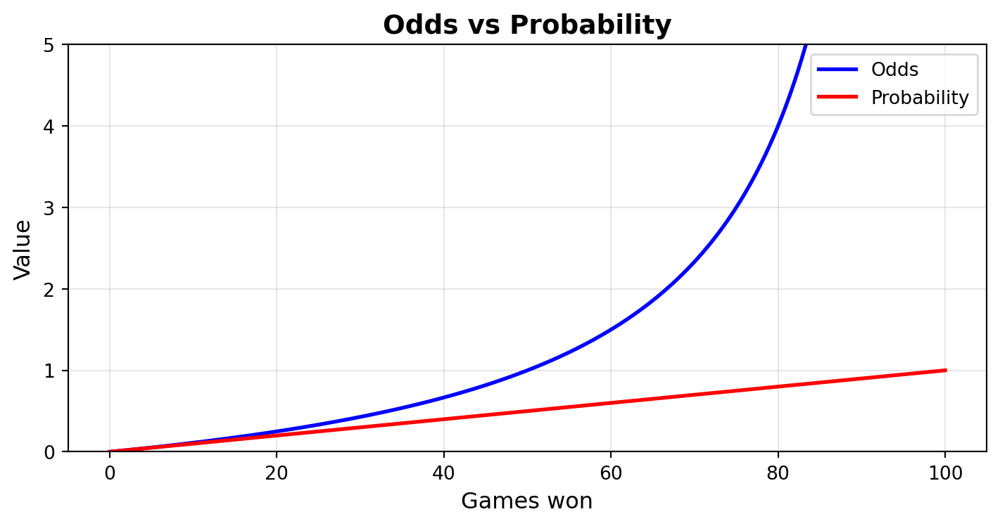
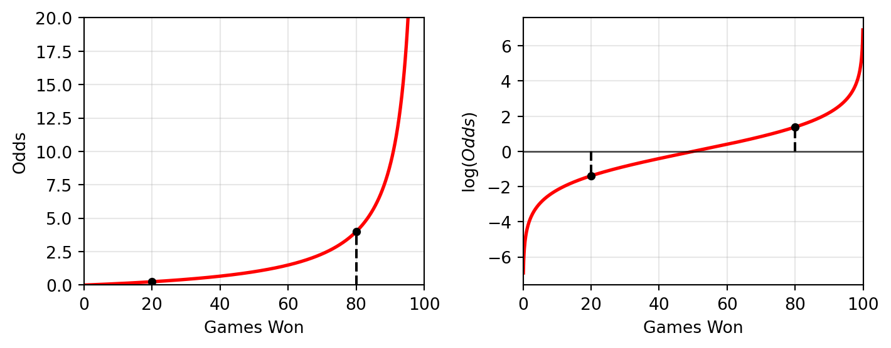
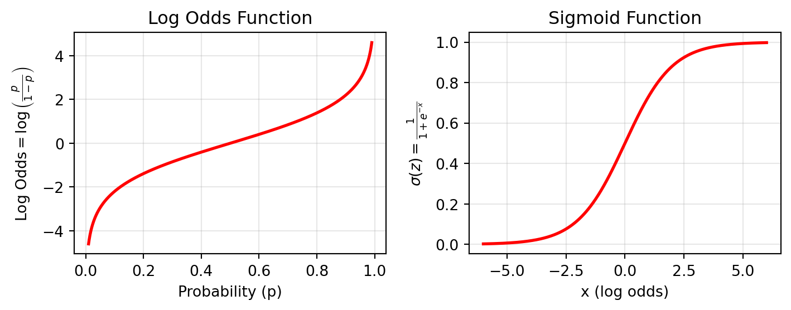

Logistic Regression
What is logisitic regression?
Logistic regression is like the linear regression of classification models. It is a simple and computationally efficient model that can perform well, but depends on a lot of strong assumptions such as a linear relationship between the model inputs and the log-odds. To understand how it works, it helps first to understand the difference between odds and probabilities along with how the sigmoid function relates the two.
Odds and Log Odds
Odds and probabilities are related but not the same. The odds of an event, \(Y\), are the ratio of the event happening to the event not happening. For example, if the odds of Edinburgh Rugby beating the Glasgow Warriors are 5 to 3, then that means if it were to be played 8 times, Edinburgh would win 5 of those times and the odds would be \(5/3 \approx 1.7\). Probability on the other hand, is the ratio of the event happening to everything, i.e., the number of games Edinburgh Rugby win, to the number of total games they play, which is \(5/8 = 0.625\).
Probabilities are always between 0 and 1, while odds are within the range of 0 and infinity.
Note
The graph below shows how the probability and the odds change depending on the number of games won by Edinburgh out of 100. As the number of wins approaches 100, the probability approaches 1, but the odds increase exponentially towards infinity. We also see that the odds go from being bound between 0 and 1 while the probability is less than 50% and between 1 and infinity while the probability is greater 50%.
Calculating the odds from probabilities
The odds of an event happening can be calculated from the ratio of the probabilites of each event.
\[ \text{Odds} = \frac{P(Y = 1)}{P(Y = 0)} \]
Back to the Edinburgh Rugby example, where \(Y = 1\) is the event where Edinburgh Rugby beats the Glasgow Warriors,
\[ \begin{split} P(Y = 1) &= \frac 5 8 = 0.625 \\ P(Y = 0) &= 1 - P(Y = 1) = \frac 3 8 = 0.375 \\ \text{Odds of Edinburgh Winning} &= \frac{P(Y = 1)}{P(Y = 0)} = \frac 5 8 / \frac 3 8 = \frac 5 3 \approx 1.7 \end{split} \]
Log Odds
When the odds are against an event happening, i.e., it is less likely to happen than not happen, the odds will be between 0 and 1. Conversely, when the odds are in favour of an event happening, the odds will be between 1 and infinity. For example, if the odds of an event are against 1 to 6, then the odds are approximately 1.7. But if the odds are in favour 6 to 1, then the odds are 6. The magnitude of the odds against look much smaller than the odds in favour, but taking the log of these creates symmetry around zero. This symmetry is crucial for logistic regression because it allows us to model the relationship between features and outcomes using a linear equation, even though probabilities themselves are bounded between 0 and 1.
\[ \log(1/6) = - \log(6) = -1.79 \]
The log function makes the absolute distance from 0 to the odds the same whether it is against or in favour. The graph below shows how 4 to 1 odds in favour (80 to 20) compare to 4 to 1 odds against (20 to 80) when viewed from the perspective of odds and log odds.

In logistic regression, we assume the log odds are normally distributed, which is one reason why this transformation is so useful for statistical modelling.
Logistic Function (or Sigmoid Function)
The logit function is defined as the log of the ratio of probabilities, i.e., the log odds.
\[ z = \log\left(\frac{p}{1 - p}\right), \text{ where } p = P(Y=1) \]
The logistic function, or the sigmoid function, is the inverse of the logit function.
\[ \begin{split} e^z &= \frac{p}{1-p}\\ e^{-z} &= \frac 1p - 1\\ 1+ e^{-z} &= \frac{1}{p}\\ \sigma(z) = p &= \frac{1}{1+e^{-z}} \text{ where } z \text{ is the log odds} \end{split} \]
This is the logistic function:
\[ \sigma(z) = \frac{1}{1+e^{-z}} \]
This means that the logistic function backs out the probability of an event happening, from the log odds of the event happening.

Maximum Likelihood Estimation
Logistic regression uses Maximum Likelihood Estimation to estimate the parameters that best fit the training data.
For a single observation, the likelihood of observing that observation depends on its class label:
- If \(y = 1\): The probability is \(P(y = 1|x) = \sigma(z)\).
- If \(y = 0\): The probability is \(P(y = 0|x) = 1 - \sigma(z)\).
This can be combined into a single expression:
\[ P(y|x) = \sigma(z)^y \cdot (1-\sigma(z))^{(1-y)} \]
For a dataset with \(m\) observations, the likelihood function, which gives the probability of observing a particular dataset, is the product of the individual observation probabilities for all the observations.
\[ L(\beta) = \prod_{i=1}^m \sigma(z_i)^{y_i} \cdot (1 - \sigma(z_i))^{(1-y_i)} \]
where \(z_i = \beta_0 + \beta_1 x_{i1} + \beta_2 x_{i2} + ... + \beta_n x_{in}\) is the linear combination for the \(i^{\text{th}}\) observation and \(y_i\) is the actual observation.
To simplify the maximisation computation, we can take the log of this, making it the log-likelihood function.
\[ \log L(\beta) = \sum_{i=1}^m [y_i \log(\sigma(z_i)) + (1-y_i)\log(1 - \sigma(z_i))] \]
The objective of MLE is to maximise the log-likelihood. This is the same as minimising the negative log-likelihood, which is also called the cross-entropy loss. Intuitively, when \(y_i = 1\), the loss simplifies to \(-\log\sigma(z_i)\), heavily penalising the model if it assigns a low probability to the positive class. When \(y_i = 0\), the loss simplifies to \(-\log(1-\sigma(z_i))\), heavily penalising the model if it assigns a high probability to the positive class.
\[ \mathcal{L}(\beta) = -\frac 1 m \sum_{i=1}^m [y_i \log(\sigma(z_i)) + (1-y_i)\log(1 - \sigma(z_i))] \]
In general, there is no analytical solution to this minimisation, so numerical methods, like gradient descent, must be used to find the optimal parmeters of the model.
Making predictions and interpreting coefficients
To make predictions using logistic regression, a threshold probability is chosen where predictions above that threshold are sorted into a different class to those below. Typically, the default threshold would be 0.5, however, this does not have to be the case.
Without scaling, a one unit increase in a variable \(x_i\) leads to a \(\beta_i\) units increase in \(z\), also known as the log odds. For example, a coefficient of 0.5 corresponds to an increase in the log odds of 0.5. However, this is not easily interpretable. Instead, if we take the exponential, then we see that a coefficient of 0.5 corresponds to an increase in the odds of an event happening by \(\exp(0.5) \approx 1.65\) meaning a one unit increase in the feature, leads to an increase in the odds of the positive class by 65%.
Assumptions of logistic regression
- Linearity: The relationship between the features and the log odds is linear.
- Independent errors: The errors, or residuals, are independent.
- No multicollinearity: The independent variables are not highly correlated with each other.
- Sufficient sample size: Logistic regression requires a sufficiently sized and balanced dataset. A rule of thumb is 10-20 observations per feature.
In code
We can use the sklearn.linear_model package to build logistic regression models using python. Let’s test it on the loan application data set from Kaggle.
import pandas as pd
from sklearn.linear_model import LogisticRegression
from sklearn.model_selection import train_test_split
from sklearn.metrics import accuracy_score
data = pd.read_csv("./loan_data.csv")
data.drop(columns=['Loan_ID'], inplace=True)
data = data.dropna()
# replace '3+' with '3' in dependents column
data['Dependents'] = data['Dependents'].replace('3+', '3')
data['Dependents'] = data['Dependents'].astype(int)
X = data.drop(columns=['Loan_Status'])
y = data['Loan_Status']
X = pd.get_dummies(X, drop_first=True)
X_train, X_test, y_train, y_test = train_test_split(X, y, test_size=0.2, random_state=42)
model = LogisticRegression(class_weight="balanced")
model.fit(X_train, y_train)
# Get probabilities:
y_proba = model.predict_proba(X_test)
# Get predictions:
y_pred = model.predict(X_test)
print(f"Logistic Regression Accuracy: {accuracy_score(y_pred, y_test)}")Logistic Regression Accuracy: 0.7580645161290323Here we can see that our logistic regression model is able to correctly predict the outcome of a loan application 75% of the time. This dataset is covered in more depth in the section on decision trees.